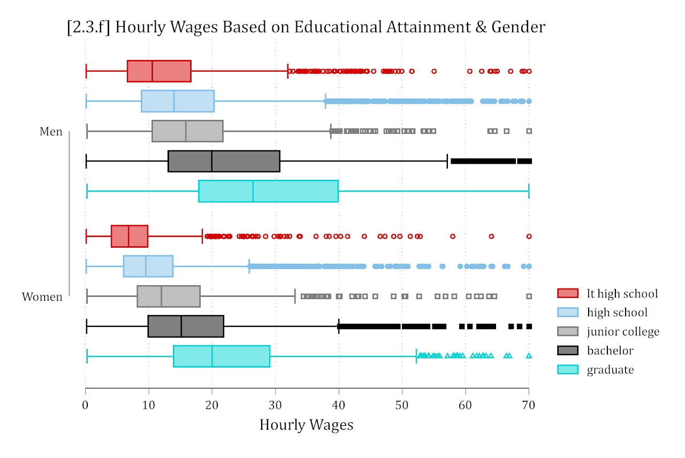
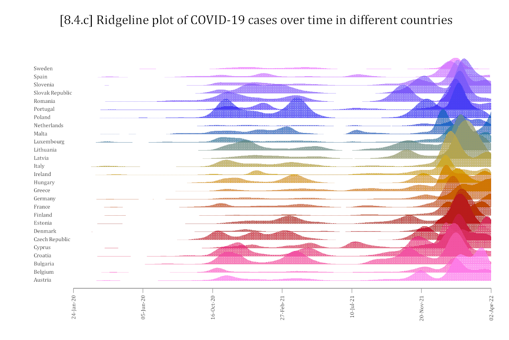

Data Visualization & Model Presentation Workshop


Understanding data and effectively presenting model results are challenges that data analysts face almost every day. There is seldom a more effective solution than a well thought out visualization. Problems in the data are easily identified; complex effects are quickly summarized; effect sizes and variability are immediately clear. In this workshop, I cover best practices for accurately representing data as well as many specific approaches to data exploration, model diagnostics, and model presentation. In addition to covering the aesthetics of attractive visualizations, I also discuss the science of what makes certain visuals effective and in which situations they work best.
The resources below provide slides with examples along with template R and Stata code to recreate the types of visualizations I cover in your own work.
Data Visualization & Model Presentation in R (Eskenazi Health)
Logistics
Monday October 27, 2025
Workshop Materials
Data Visualization with Stata (Center for Aging and Policy Studies)
Logistics
Friday March 31, 2023
- Syracuse University
Workshop Materials
Data Visualization (AMAP Purdue 2022)
Logistics
Friday Sep 23 from 1:00 - 5:00pm
- WALC 2124
Workshop Materials
Data Visualization & Model Presentation in Stata (PAA 2022)
Logistics
Wednesday April 6 from 1:00 - 5:00pm
- Workshop offered at the Population Association of America 2022 Annual Meeting (details here)